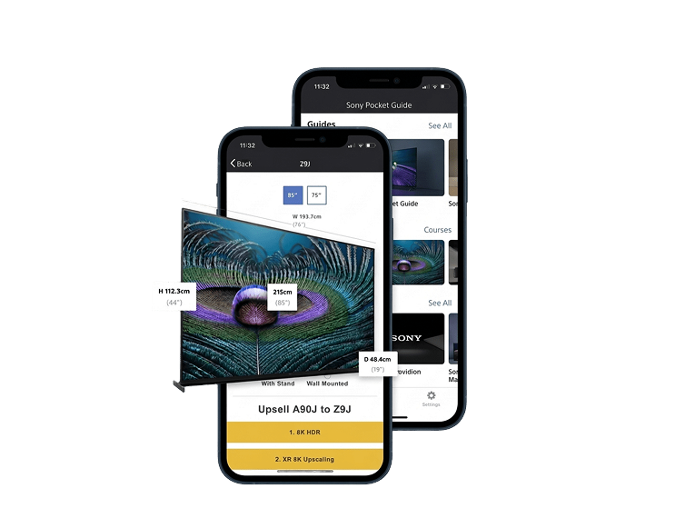

Final product
What shipped across 15 markets
The eLearning platform, mobile companion app and authoring tooling, all designed from scratch and deployed simultaneously across all regions at launch.

Web platform: the course browser with category filters, progress tracking and structured module navigation.

Mobile pocket guide: on-floor access to product specs and key selling points, no desk, no login, no friction.

Content authoring environment: Sony's central team creates courses once, configures translations, and publishes to all markets, no regional rebuild required.